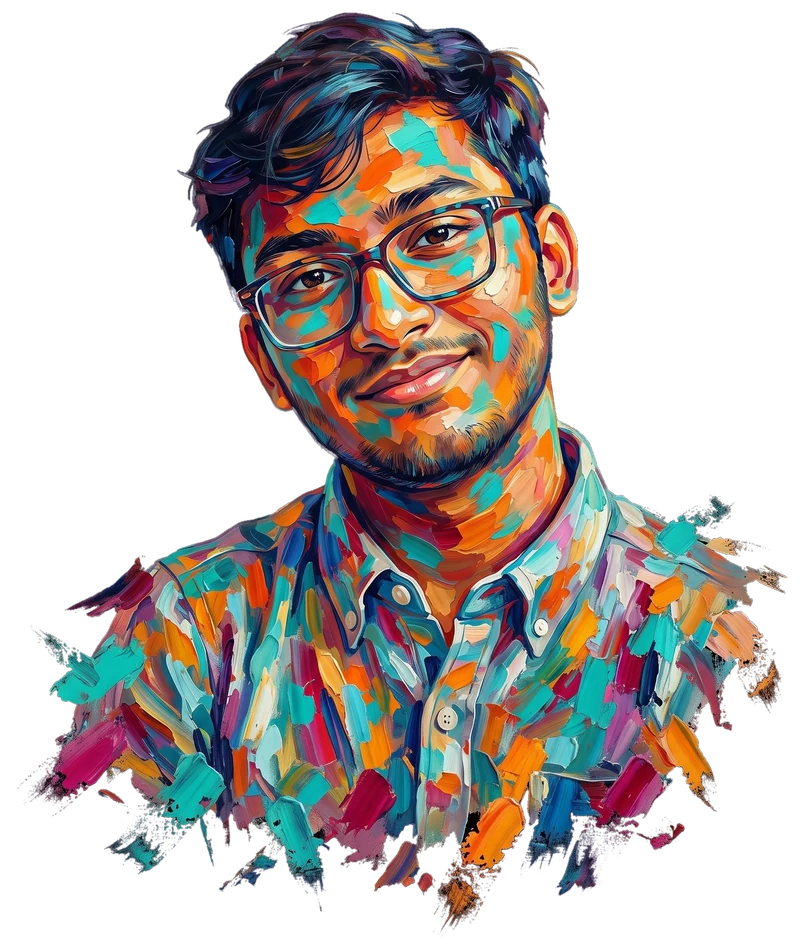

Artist statement.

I have never been comfortable with the familiar simply because it is familiar. This drives me to keep learning, experimenting, and asking more of what I make. I find beauty in ordinary things, often placing an imaginary frame around what I see before reaching for a camera. My subjects can be simple: a domestic interior, a landscape, a moment with friends. My ambition lies in what I can make from them through close attention and decisions about framing, color, and composition.
Painting and photography let me spend time with places and moments that hold my attention. Landscapes draw me through their light and atmosphere; domestic interiors and gatherings with friends carry affection and nostalgia. In View from room and Dinner with Mily Rafiq, familiar surroundings become part of what makes an experience personal.
My abstract paintings involve another kind of recognition. I work through color and composition, and the feeling of a painting often becomes clear during or after its making. In Degrees of Happiness, the yellow of Almost Happy becomes a more forceful orange in Aggressive Happiness. My relationship with a painting can continue to change after it is finished, and I welcome viewers finding their own emotional responses.
My practice also moves between materials and disciplines. A printed design becomes the surface of a ceramic mug. In the Planet Walk, my mathematics and data science background meets material experimentation, public space, and an interactive website. For A Digital Moving Mountain, I researched Gan Yu’s participatory ink painting and built a digital extension where visitors can add their own responses while remaining connected to his original brushwork.
I am developing sustained series of intimate scenes and abstract paintings while exploring combinations of media and interactive experiences. Across these approaches, I want to create work that rewards attention and invites people to look, explore, and make connections of their own.